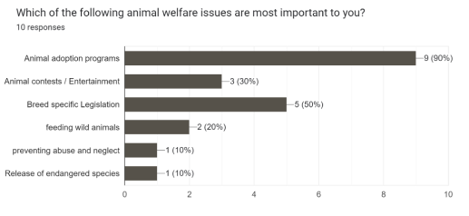
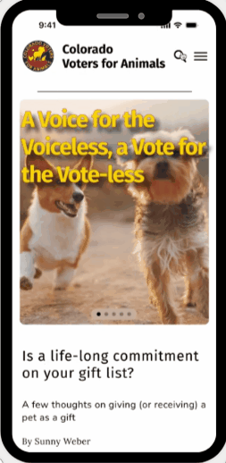

For my second group project case study, I worked with 3 other UX/UI student designers to create a mobile and desktop redesign of a local non-profit website. We created a responsive web design based on survey data and insights from our stakeholder interview.
Colorado Voters for Animals
The Colorado Voters for Animals mission is to protect animals through public policy and to support candidates who are committed to animal protection. They have been active since 2011 and their supporter base exceeds 30,000 Coloradans. “Our mission is to protect animals through public policy and to support candidates who are committed to animal protection.” (https://covotersforanimals.org/mission/)
Problem Statement
Colorado Voters for Animals empowers communities to advocate for animal rights and welfare through education and activism. However, the current website design lacks user engagement, fails to effectively communicate its mission, and does not provide a seamless user experience.
Project Overview
For this project, my group and I focused on how we could help spread awareness for the cause of this non-profit organization. By redesigning the Colorado Voters for Animals website to improve navigation, enhance visual appeal, and integrate seamless user interactions, we hoped to increase member and supporter engagement, amplify CVA’s mission communication, and foster a stronger sense of support among lobbyists and activists.
• User Research Plan • Proto-persona (2) • Interview plan and questions • Heuristic evaluation • Hypothesis statement • Survey
Proto-personas
We created two personas to try and cover the types of Colorado voters who might visit the website for this non-profit. The first proto-persona is a young man interested in ranching and agriculture, representing a large population of rural Coloradans; the second is a retired businesswoman and activist, similar to many of the board members and volunteers who work for the CVA.
Survey data results
For the majority of survey participants, animal adoption programs were the most prevalent reason to visit the CVA website.

• User interviews and transcripts • Stakeholder interview and transcript • Affinity diagram • User persona • Empathy map • User insight
After considering the feedback from our survey and the insights gained from our stakeholder interview, we thought the website could be re-focused as a rallying place for ideas and collaboration (rather than membership and sponsorship).
Stakeholder Interview
This is a screenshot from my 1-to-1 stakeholder interview. I spoke with Roland Halpern the executive director of CVA, who mentioned the type of users who visit the site, the focus of their work at CVA (mainly education and activism), as well as improvements he would like to have on the site (if he could afford such changes).
Empathy Map
We next developed our affinity diagram and empathy map, a place to consider what the typical user says about the mission of CVA, what they think about the site, what they do, how they feel, and any pains or gains.
Affinity Diagram
User Persona
The typical user doesn't necessarily visit the site to become a full-fledged, annually-donating member. Users generally come to the site to be more informed–staying up-to-date on the latest ballot items, signing a petition, and learning how they can directly take action to defend animal wellbeing in their community. Ultimately, users go to the site for more information about animal rights issues.
• Problem statement • Competitor analysis • UX hypothesis • Value proposition • User journey map
UX Scenario & User Journey
In this scenario, our user persona attempts to navigate the CVA website in order to become a member.
Sketches
Once we had a new sitemap in place, we began our sketches and initial wireframing. The following is a sketch that I completed for collaboration with my group.
After considering the current information architecture of the site, we reorganized the pages and information using a card sorting method. In this way, we gained a new perspective on the organization of the entire site and developed a new sitemap.
• User testing plan • Usability test analysis • UI style guide • Iterations based on user tests • Mid-fi prototype • Hi-fi A/B testing
Style Guide
We developed a style guide, which we implemented across all pages for both desktop and mobile.
Iterations based on user tests
After conducting our usability testing, we iterated a few UI elements of our mobile prototype, as well as design elements of our desktop prototype.
Mobile Iterations
For our mobile prototype, we added a search bar to the navigation, adjusted the typeface for the homepage tagline, and moved common buttons to the top of the page.
Desktop Iterations
For our desktop prototype, we also conducted an A/B test on our desktop homepage design. Option A (on the left) was designed by my teammate Taylor Knauff, and I designed option B (on the right). Based on our user tests, users preferred option B.
Click the button below to view the fully-clickable and interactive re-design of the mobile CVA site.

A few final thoughts on what I learned from this group project.
CVA has an important mission which could be more widely shared if this nonprofit had more resources and, perhaps, a dedicated media person on staff. As a volunteer-based organization, CVA is somewhat limited by the time and energy of its board members; however, there is so much potential for growing the outreach of this organization. One small step would be expanding the usability of its website.